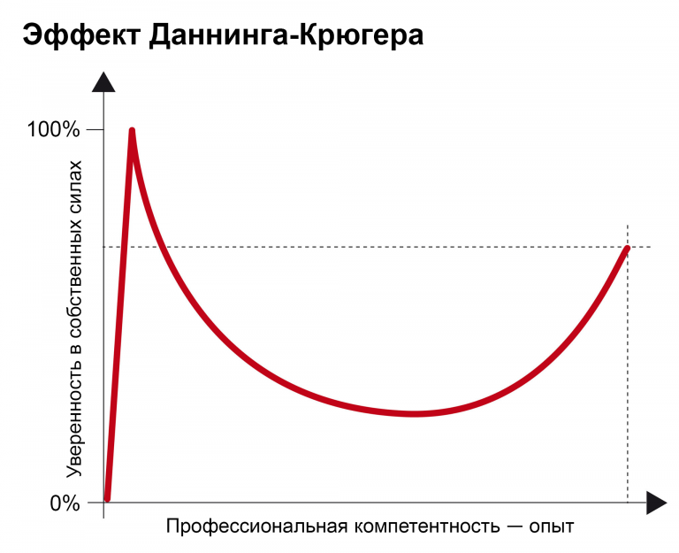

Какие ваши доказательства?
Итак, Дэвид Даннинг и Джастин Крюгер измерили склонность некомпетентных людей переоценивать себя. Их исследование началось с любопытного газетного факта: некий МакАртур Уиллер узнал, что лимонный сок используют в шпионских делишках в качестве невидимых чернил. Действительно, когда сок высыхает, он делается невидимым (проявляется потом при нагревании). Мужчина обмазал лицо лимонным соком и попытался совершить ограбление банка, думая, что тоже станет невидимым. Даннинг прочел эту заметку и подумал, что Уиллер слишком глуп, чтобы быть грабителем, более того — слишком глуп, чтобы понять, что он глуп. После этого Даннинг нашел метод измерения способности к самооценке для групп студентов, которые оценивали разные сферы: от логического мышления до знания грамматики. Затем Даннинг сравнивал действительный уровень знаний и оценку, которую давали своим навыкам молодые люди. Результаты однозначны: некомпетентные люди имеют склонность регулярно переоценивать собственные способности и недооценивать средний уровень способностей группы. Склонность некомпетентных к ошибке — всеобъемлюща и бросает вызов элементарным законам математики, подчеркивает Дэвид Даннинг в своем коротком выступлении на Ted-Ed. Например, 42% инженеров в группе считают, что относятся к 5% лучших специалистов группы. Или, например, 88% американских автомобилистов считают, что их способности по вождению выше среднего. Таким образом, к некомпетентности часто добавляется высокомерие и тогда некомпетентные люди начинают свято верить в свои способности. У них нет представления о границах своих знаний и они даже не понимают, что ошибаются. Таким образом, им трудно признать компетентность других, они даже доходят до того, что презирают ее.
Хорошая новость и две плохие
Хорошая новость в том, что если человек продолжает учиться, иллюзия «всезнания» быстро уменьшается, это видно на графике.
THIS TEXT IS FOR TESTING FONT

Плохая новость — некомпетентные люди не считают необходимым еще чему-нибудь учиться, им очень удобно «почивать на лаврах» воображаемого ими высокого уровня знаний, с которого они презрительно смотрят на остальной мир вокруг. Еще одна плохая новость в том то, что даже самые лучшие эксперты никогда не достигнут такого уровня уверенности в своих знаниях и навыках. Они слишком хорошо знают, что мир сложный, что не так все просто и т.д. Все это приводит к тому, что на нас эффект Даннинга-Крюгера производит абсолютно обезоруживающий эффект. Но и это еще не все. Эксперты и не-эксперты пытаются строить диалог (и спорить) на двух разных уровнях: эксперты говорят по сути, а самоуверенные не-эксперты подвергают сомнению авторитетность своих собеседников, ставя их в неловкое и неприятное положение.
Неприятно и то, что компетентные люди (лучшие ученики и студенты, в том числе) склонны недооценивать свои знания и способности. Если они что-то знают, если что-то им дается легко, они думают, что все такие, и что они не представляют из себя ничего особенного. Так, постепенно у них может развиться синдром самозванца: боязнь, что знаний и умений всегда недостаточно. Получается, что синдром самозванца — это обратная сторона эффекта Даннинга-Крюгера. Жаль, что одна его сторона вредит умным людям, а другая дает преимущество глупым (по крайней мере это касается самооценки, пока они не соберутся ограбить банк). Откуда взялся этот эффект? Это искажение способности оценивать и принимать решение, возникающее в результате поспешных суждений, основанных на предубеждениях, недоразумениях и неверных данных. Конечно, никто не застрахован от когнитивных искажений. Википедия дает целый их список, с которым вы можете, на всякий случай, ознакомиться, чтобы понять, сколькими разными способами все мы можем ошибаться. Но если мы знаем, что существуют когнитивные искажения, подвергаем сомнению чьи-то высказывания, держимся за реальность и ведем себя «проще», то мы будем ошибаться меньше и меньше страдать из-за наших ошибок.